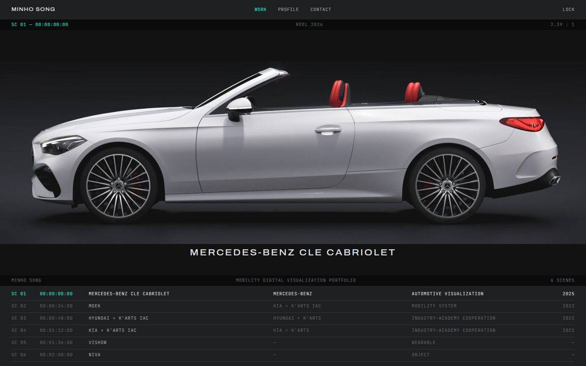
Every plate a 2.39:1 letterboxed frame; reel index with mint timecode.
모든 컷을 2.39:1 레터박스 프레임으로 — 홈은 와이드 프레임 하나와 릴 인덱스, 프로젝트는 숏의 연속.
Archivo · JetBrains Mono
Minho Design · Portfolio · Template proposals · 2026.11.10
Round 2 after your notes: horizontal plates (2.4:1 / 21:9), the dark charcoal and mint sampled from your site and PDF, spectrum only as a small extra. Each template is the same content — the index and the Mercedes-Benz CLE Cabriolet detail — built in its own visual language, with a DESIGN.md that fixes colour, type, spacing and components. Pick one, or name the parts to combine.
Lock screen: any input + Enter

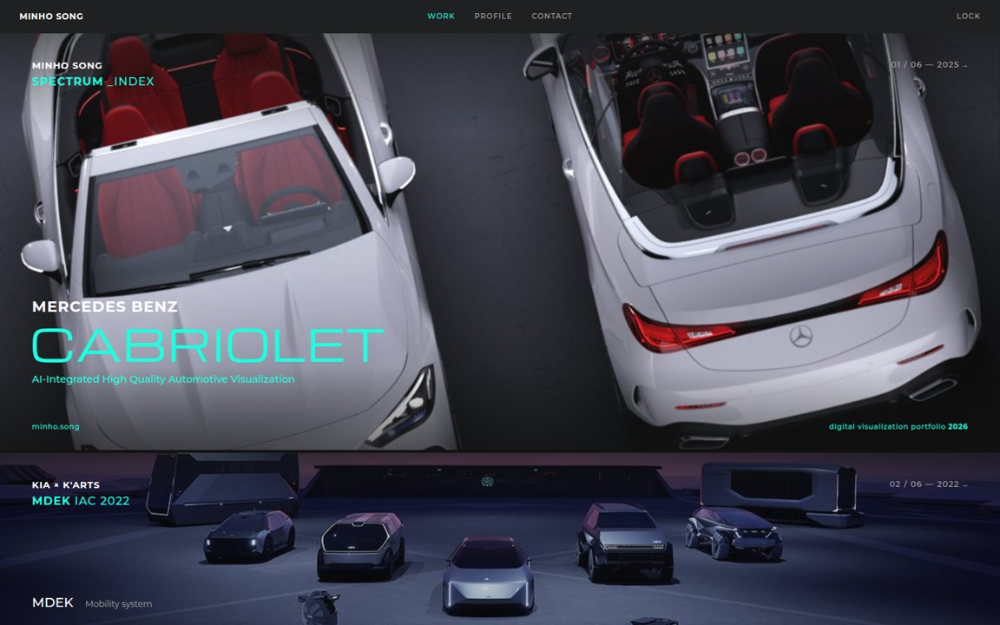
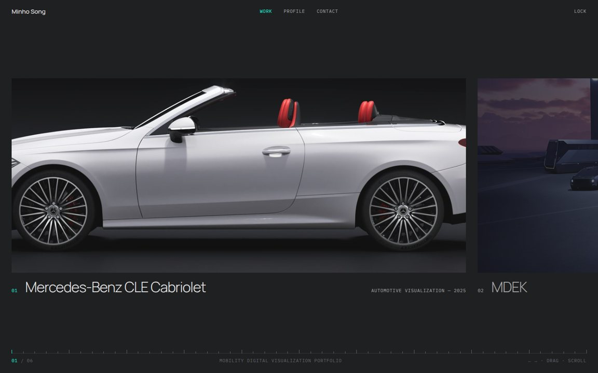
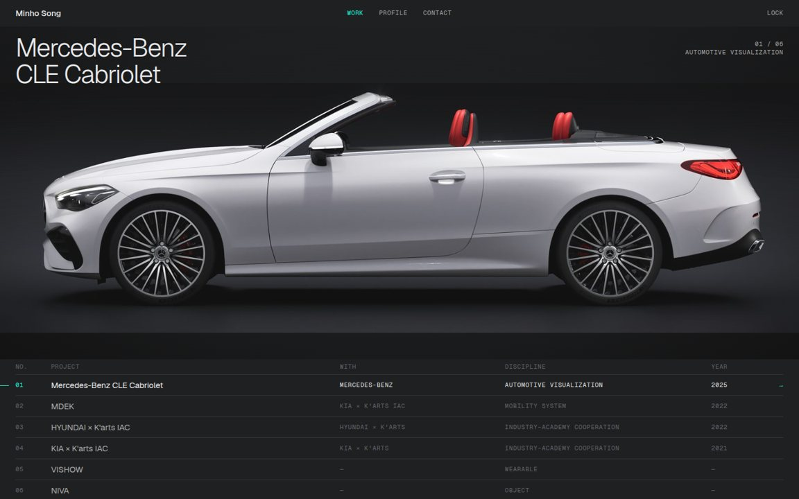
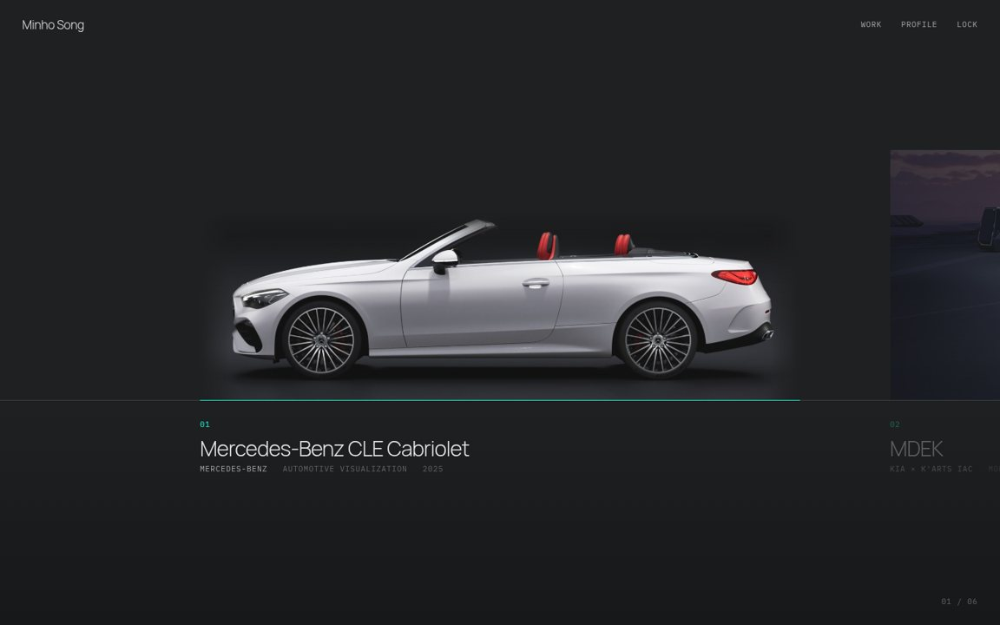
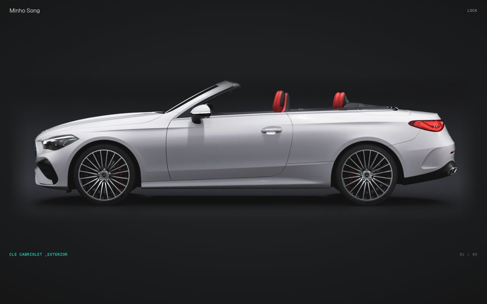
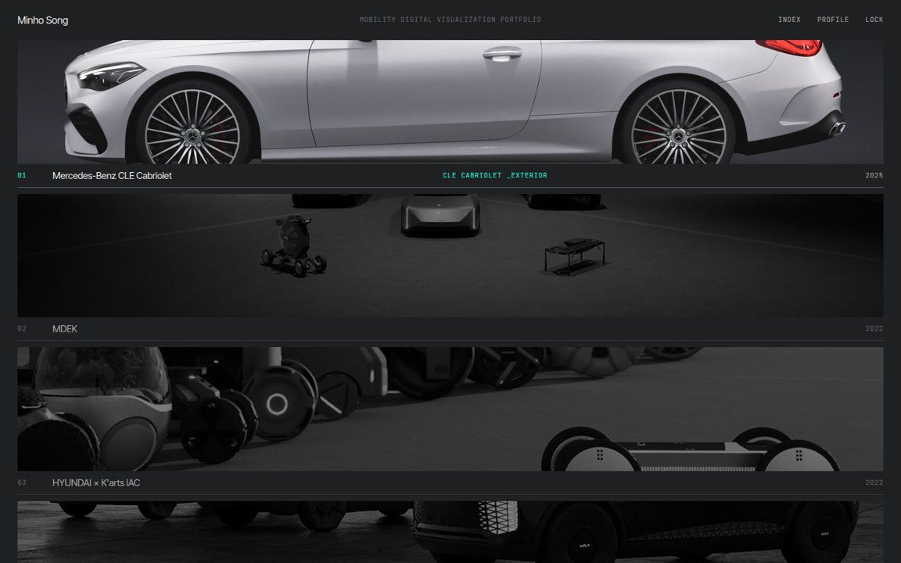
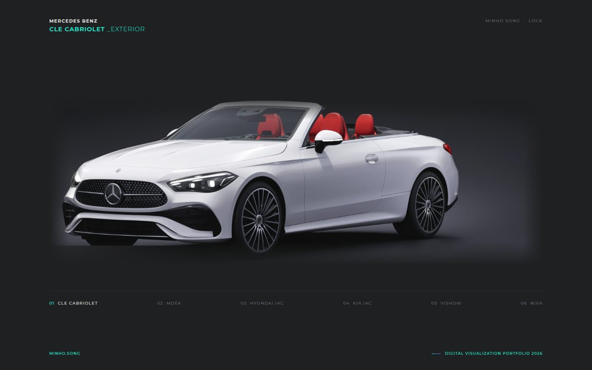
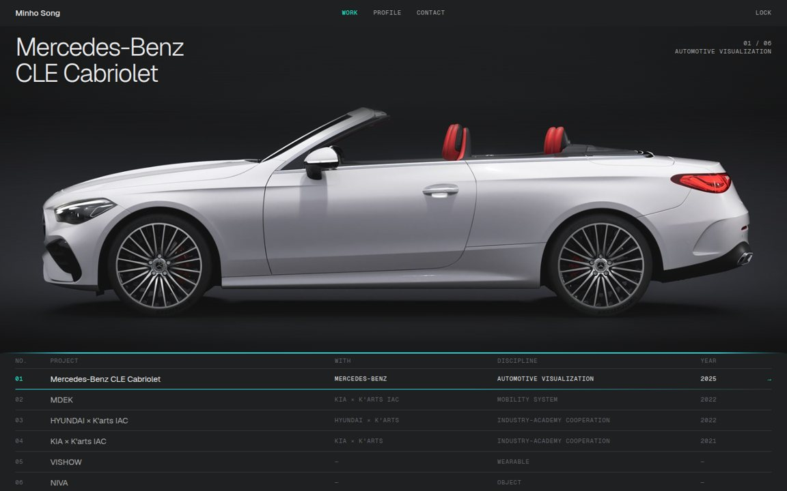
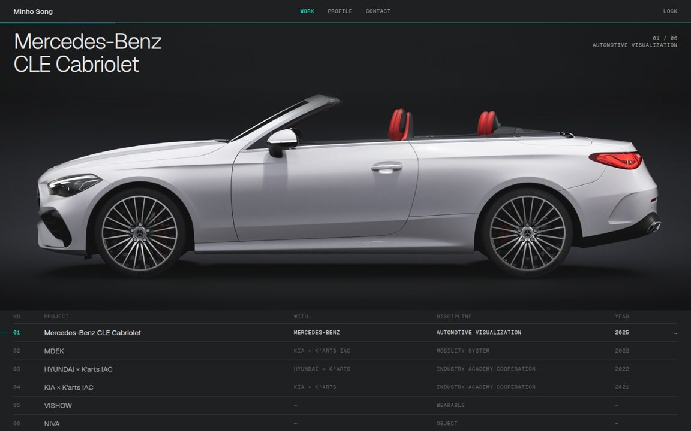
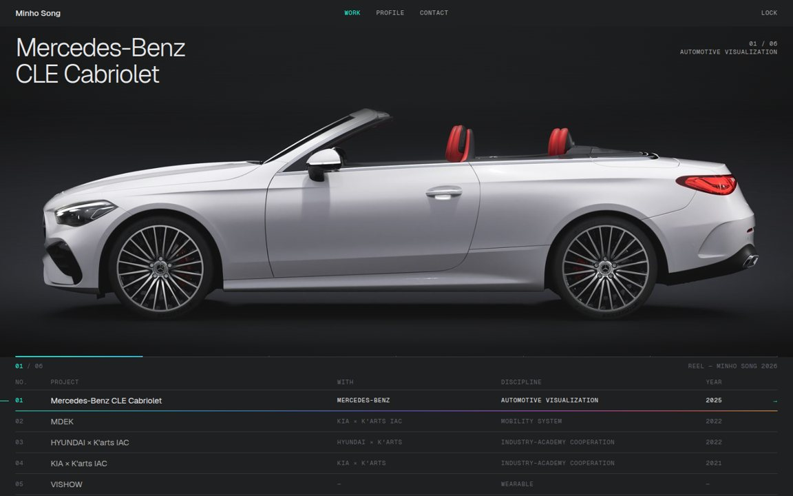
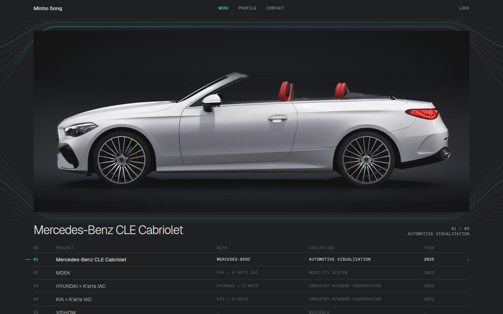